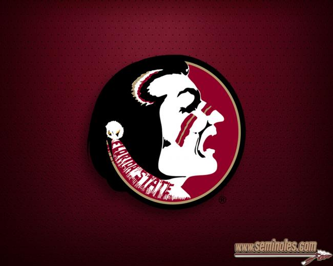
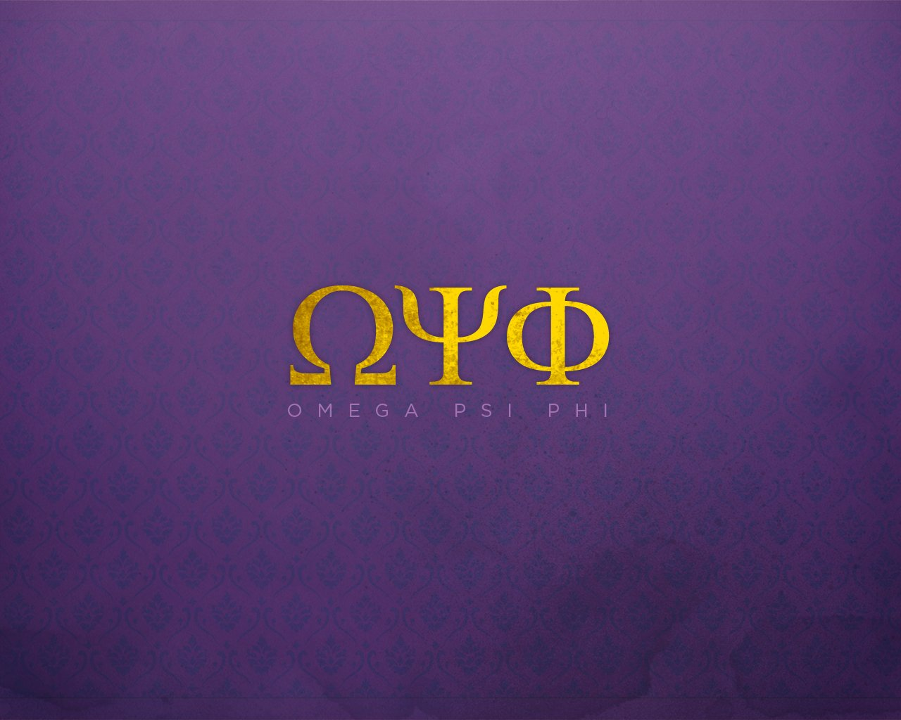

Scouts BSA
Founded in 1910, Scouts BSA helps to prepare young people to make ethical and moral choices over their lifetimes. They are trained in responsible citizenship, character development, self-reliance and career-oriented programs through participation in a wide range of activities and educational programs.
Learn more

The Florida State University
Founded in 1851, it is located on the oldest continuous site of higher education in the state of Florida. The university comprises 16 separate colleges and more than 110 centers, facilities, labs and institutes that offer more than 360 programs of study, including professional school programs.
Learn more

Omega Psi Phi
Omega Psi Phi Fraternity, Inc. (ΩΨΦ), a historically African American fraternity is the first fraternal organization founded at a historically black university. Since its founding on November 17, 1911 at Howard University, the organization has chartered over 750 undergraduate and graduate chapters.
Learn more